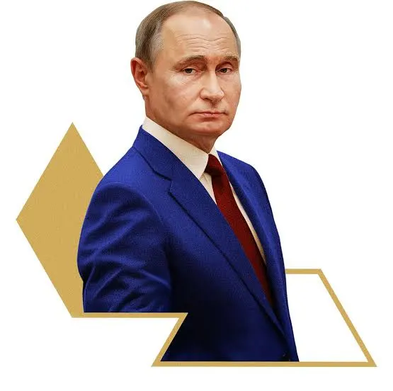

Vladimir Vladimirovich Putin

Vladimir Vladimirovich Putin[h](born 7 October 1952)
is a Russian politician and former intelligence officer
who has served as President of Russia since 2012, having previously served from 2000 to 2008. Putin also served
as Prime Minister of Russia from 1999 to 2000[i] and again from 2008 to 2012.[j][9] He has been described as the
de facto leader of Russia since 2000.[10]
Born in Leningrad (now Saint Petersburg), Putin worked as a KGB foreign intelligence officer for 16 years,
rising to the rank of lieutenant colonel. He resigned in 1991 to begin a political career in Saint Petersburg.
In 1996, Putin moved to Moscow to join the administration of President Boris Yeltsin. He briefly served as
the director of the Federal Security Service (FSB) and then as secretary of the Security Council of Russia
before being appointed prime minister in August 1999. Following Yeltsin's resignation, Putin became acting president
and, less than three months later in March 2000, was elected to his first term as president. He was reelected in 2004.
Due to constitutional limitations on two consecutive presidential terms, Putin served as prime minister again from 2008 to 2012
under Dmitry Medvedev. He returned to the presidency in 2012, following an election marked by allegations of fraud and protests,
and was reelected in 2018.
During Putin's initial presidential tenure, the Russian economy grew on average by seven percent per year as a result of
several economic reforms and a fivefold increase in the price of oil and gas.[11][12] Additionally, Putin led Russia in a
conflict against Chechen separatists, re-establishing federal control over the region.[13][14] While serving as prime minister
under Medvedev, he oversaw the Russo-Georgian War, alongside enacting military and police reforms. In his third presidential term,
Russia occupied and annexed Crimea as well as supported a war in eastern Ukraine through several military incursions, resulting in
international sanctions, which, together with a drop in oil prices on the international markets, led to the financial crisis in
Russia.[15] Additionally, he ordered a military intervention in Syria to support his ally, President Bashar al-Assad, during the
Syrian civil war. In April 2021, after a referendum, he signed constitutional amendments into law that included one allowing him
to run for reelection twice more, potentially extending his presidency to 2036.[16][17] In February 2022, during his fourth
presidential term, Putin launched a full-scale invasion of Ukraine, which prompted international condemnation and led to expanded
sanctions. In September 2022, he announced a partial mobilization and forcibly annexed four Ukrainian oblasts into Russia.
In March 2023, the International Criminal Court issued an arrest warrant for Putin for war crimes[18] related to his alleged
criminal responsibility for illegal child abductions during the war.[19] In March 2024, he was reelected to another term.
WEEKLY TIME TABLE
| Time |
Monday |
Tuesday |
Wednesday |
Thursday |
Friday |
| 09:00-10:00 |
Mathematics |
Physics |
Mathematics |
Physics |
English |
| 10:00-11:00 |
History Seminar (Block A) |
Chemistry |
Biology |
Computer Lab |
| 11:00-1200 |
Coding Workshop |
Library Study |
Mathematics |
English |
Project |
| 12:00-13:00 |
LUNCH BREAK |